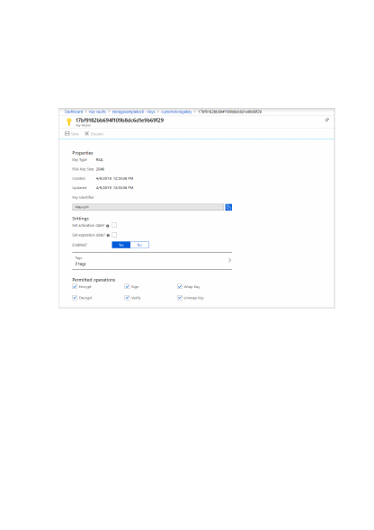
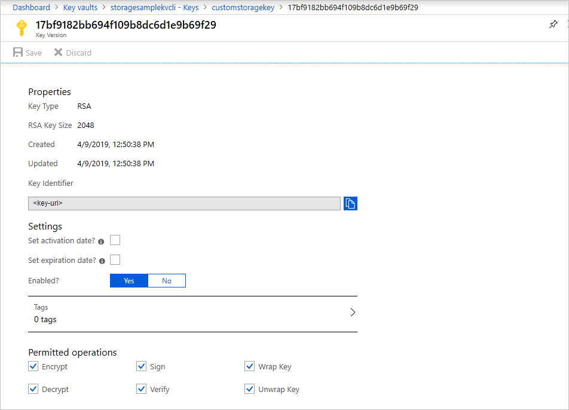

1. In the Azure portal, go to your key vault.
2. Under Settings, select Keys.
3. Select the desired key, and then select the key to view its versions. Select a key
version to view the settings for that version.
4. Copy the Key Identifier value, which provides the URI.
5. Go back to your Cognitive Services resource, and then select Encryption.
6. Under Encryption key, select Enter key URI.
7. Paste the URI that you copied into the Key URI box.